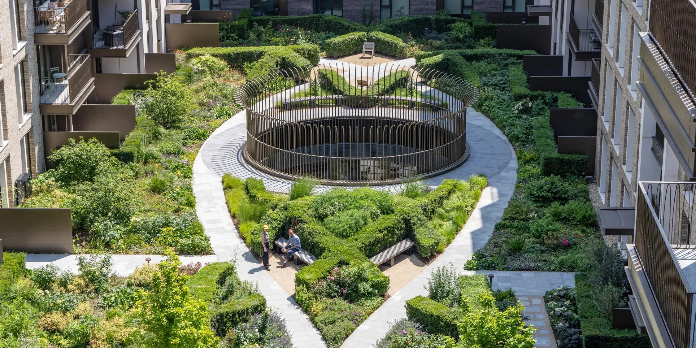
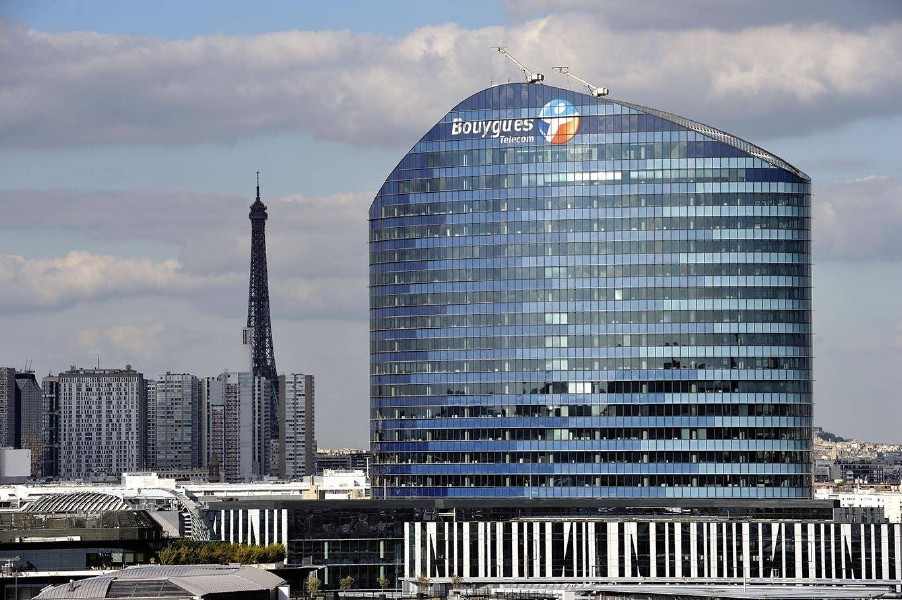
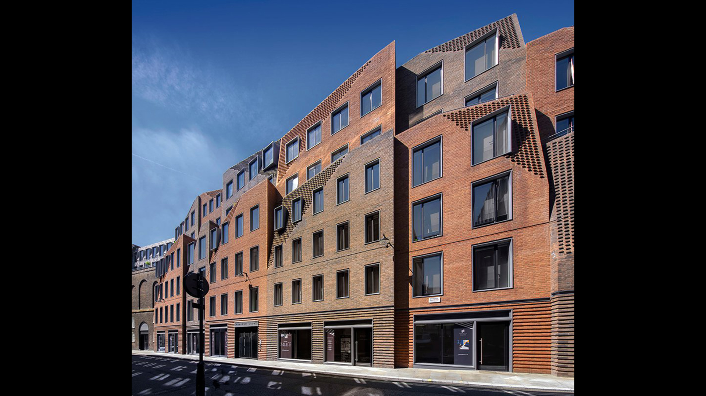

Analyse du contexte urbain
- Compréhension des connexions existantes.
- Identification des usages et des flux.
- Intégration du projet dans son environnement.
Conception des relations entre bâtiments, espaces publics et environnement urbain.
Explorer l'expertiseConception des relations entre bâtiments, espaces publics et environnement urbain. L'Urban Design vise à créer des quartiers fonctionnels, accessibles et intégrés dans leur contexte.

Arquitectonica considère les bâtiments comme des éléments participant à la transformation de la ville. Les projets cherchent à créer des interactions entre architecture, mobilité, espaces publics et usages urbains.
Analyse des flux piétons et des mobilités.
Concevoir des espaces ouverts permettant à la ville de pénétrer naturellement dans le bâtiment.
Intégrer directement les transports en commun au cœur du projet.

Projet urbain mixte créant une nouvelle centralité grâce à ses commerces, espaces publics et connexions piétonnes.
Voir le projet →
Projet participant au renouvellement urbain avec une relation forte entre ville, Seine et transports.
Voir le projet →
Projet intégré dans un tissu urbain dense respectant la continuité des rues londoniennes.
Voir le projet →